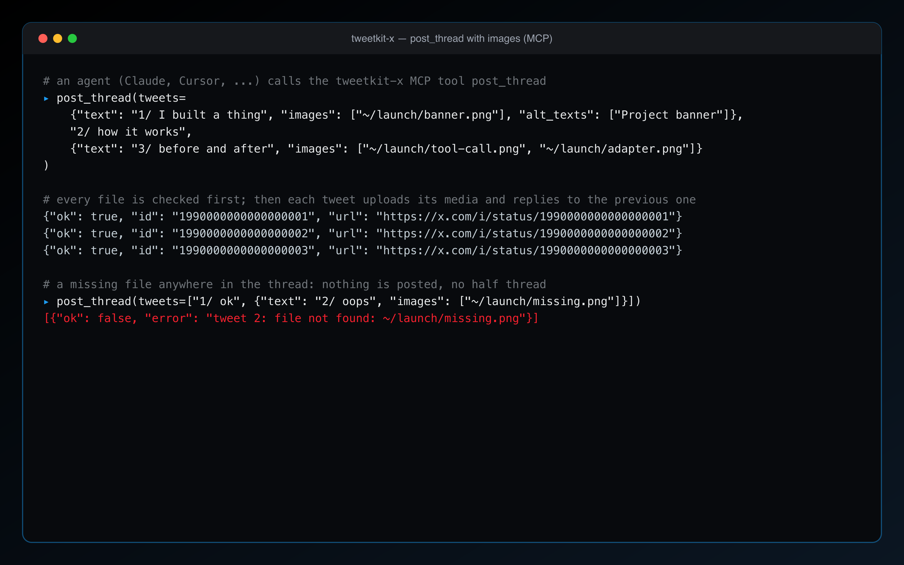

tweetkit-x
tweetkit-x is a free, open-source Python library, CLI and MCP server that posts, deletes and reads on X (Twitter) with your own logged-in web session, including images and threads, with no paid API.
It replays the HTTP calls x.com itself makes when you click Post, Delete or scroll a profile, authenticated with the session cookie your browser already has. There is no developer app, no OAuth flow and no API key. Since February 2026 the official X API has no free tier for new developers and is billed per use; tweetkit-x does not use it.
Post
Text, up to 4 images / GIF / video per tweet with alt text, replies, threads, quote tweets, long note tweets, scheduled tweets.
Delete and engage
Delete one id or a list. Like, retweet, bookmark, follow, block, mute, pin, each with an undo.
Read and search
Timelines, single tweets, replies, home feed, bookmarks, likes, notifications, profiles, followers. Search all of X with operators.
Three interfaces
A Python class (TweetKit), a CLI (tweetkit) and an MCP server (tweetkit-mcp) for Claude, Cursor and other MCP clients.
Automating your web session is against X's Terms of Service. Your account can be rate-limited, locked or suspended, and that risk is yours. See the Disclaimer.
Screenshots

post_thread with images per tweet. Every file is checked first; a missing file returns an error and nothing is posted. Rendered by scripts/make_screenshots.py, which runs the real MCP tool against an in-memory stand-in for X.Install
Requirements: Python 3.10 or newer, and an X account you are logged in to in a browser.
Version 0.5.0 (multi-image post_tweet and image threads over MCP) ships as a GitHub release with a wheel and an sdist. Until PyPI is updated, install 0.5.0 from GitHub:
# library + CLI + MCP server, version 0.5.0 from the GitHub tag
pip install "tweetkit-x[mcp] @ git+https://github.com/nsozturk/tweetkit-x@v0.5.0"
# or download the wheel from the v0.5.0 release page and install it
pip install "./tweetkit_x-0.5.0-py3-none-any.whl[mcp]"
# library + CLI only (no MCP dependency)
pip install "tweetkit-x @ git+https://github.com/nsozturk/tweetkit-x@v0.5.0"pip install "tweetkit-x[mcp]" from PyPI works too, but gives you 0.3.0 until a newer version is uploaded. Releases: github.com/nsozturk/tweetkit-x/releases.
Dependencies: requests, beautifulsoup4, lxml, x-client-transaction-id==0.0.1, and mcp>=1.2.0 for the server. No headless browser, no Selenium.
First run
tweetkit import --paste # paste the Cookie: header, then Ctrl-D
tweetkit whoami # {"ready": true, "user_id": "...", "ct0_len": 160} (no network call)
tweetkit post "hello world"Python API
from tweetkit_x import TweetKit
tk = TweetKit() # or TweetKit(keychain_slug="tweetkit") / TweetKit(cookie="auth_token=...; ct0=...")
tk.whoami() # {'ready': True, 'user_id': '...', 'ct0_len': 160}, no network
# post: text, one image, up to 4 media with alt text, a reply
tk.post("hello world")
tk.post("with a picture", image_path="/abs/path/chart.png")
tk.post("two charts", images=["/abs/path/a.png", "/abs/path/b.png"],
alt_texts=["Revenue by month", "Users by month"])
tk.post("a reply", reply_to="1800000000000000000")
# thread: strings, (text, image_path) tuples, or dicts; each tweet replies to the previous
tk.post_thread([
{"text": "1/ I built a thing", "images": ["/abs/path/banner.png"], "alt_texts": ["Project banner"]},
"2/ how it works ...",
("3/ the result", "/abs/path/result.png"),
])
# read
mine = tk.get_tweets(limit=100) # your tweets, newest first
theirs = tk.get_tweets(username="someuser", limit=50)
tk.get_tweet("1800000000000000000")
# search your own tweets (local filter) or all of X (real search, operators work)
hits = tk.search(r"xmr|monero", regex=True)
tk.search_x("mcp server", product="Latest", limit=40) # product: Top | Latest | People | Media
tk.search_x("from:someuser min_faves:1000")
# delete
tk.delete("1800000000000000000")
tk.delete_many([t["id"] for t in hits])
# more
tk.quote("worth reading", quote_tweet_id="1800000000000000000")
tk.like("1800000000000000000"); tk.unlike("1800000000000000000")
tk.retweet("1800000000000000000"); tk.unretweet("1800000000000000000")
tk.post_note("a long-form note tweet over 280 characters ...")
tk.schedule("later", at_epoch=1893456000)
tk.follow("someuser", notify=True, dry_run=True)
tk.home_timeline(following=True, limit=40)Every write returns {'ok': True, 'id': '...', 'url': '...'} on success or {'ok': False, 'status': ..., 'error': '...'} on failure. post_thread returns one result per tweet and stops at the first failure.
Thread items and validation
TweetKit.thread_items(items) normalizes every item to (text, [paths], [alt_texts]) and raises ValueError for empty text, a missing file or more than 4 media in one tweet. post_thread calls it before posting anything, so those errors post nothing. Paths may start with ~. Supported media: PNG, JPEG, WebP, GIF and MP4 (the client also maps .mov and .m4v). Videos are uploaded in 4 MB chunks and polled until X has processed them.
Note: tk.post(images=[...]) uploads the first 4 files and ignores the rest without an error; the MCP tools and post_thread reject more than 4 instead.
CLI
The tweetkit command prints JSON. Global options: --cookie-file PATH and --keychain SLUG.
# auth
tweetkit import --paste | --file PATH [--out PATH] [--keychain SLUG]
tweetkit whoami
# post and delete
tweetkit post "just some text"
tweetkit post "text + media" --image pic.png
tweetkit post "a reply" --reply-to 1800000000000000000
tweetkit thread thread.txt # tweets separated by blank lines (text only)
tweetkit quote "great thread" 1800000000000000000 [--image pic.png]
tweetkit note "a long-form tweet ..." [--image pic.png] [--reply-to ID]
tweetkit schedule "later" 1893456000 [--image pic.png]
tweetkit unschedule SCHEDULED_ID
tweetkit delete 1800000000000000000 1800000000000000001
# engage (one or more ids)
tweetkit like ID ... # also: unlike, retweet, unretweet, bookmark, unbookmark
tweetkit pin ID # also: unpin
# read and search
tweetkit tweets [@user] --limit 100
tweetkit search "xmr|monero" [@user] --regex
tweetkit searchx "mcp server" --latest --limit 40
tweetkit get ID
tweetkit home [--following] tweetkit replies ID tweetkit bookmarks
tweetkit likes @user tweetkit notifications tweetkit profile @user
tweetkit followers @user tweetkit following @user
tweetkit likers ID tweetkit retweeters ID
# people
tweetkit follow @user [--notify] [--dry-run]
tweetkit unfollow @user # also: block, unblock, mute, unmute
tweetkit friendship @user
tweetkit notify @user on|off [--live] [--dry-run]
tweetkit retweets @user on|off [--dry-run]
# bulk (resumable, journaled, 30-75 s between writes)
tweetkit bulk-follow handles.csv --dry-run
tweetkit bulk-notify handles.txt on --max 20
# account suggestions (saved to ~/.config/tweetkit/suggestions.sqlite)
tweetkit suggest @user --source follow
tweetkit suggestions --export suggestions.csvOn the CLI, post --image takes one file and thread is text only. Several images per tweet and images inside threads are available from Python and MCP.
MCP server
tweetkit-mcp is a stdio MCP server (FastMCP) for Claude Desktop, Claude Code, Cursor and other MCP clients. It has 48 tools and can set up the session cookie from inside the chat.
Client config
Add this to your client's MCP config (claude_desktop_config.json, .mcp.json, Cursor settings):
{
"mcpServers": {
"tweetkit": {
"command": "tweetkit-mcp",
"env": { "TWEETKIT_COOKIE_KEYCHAIN": "tweetkit" }
}
}
}Without a local install, run it through uvx from the v0.5.0 tag:
{
"mcpServers": {
"tweetkit": {
"command": "uvx",
"args": ["--from", "tweetkit-x[mcp] @ git+https://github.com/nsozturk/tweetkit-x@v0.5.0", "tweetkit-mcp"]
}
}
}The env block is optional. TWEETKIT_COOKIE (the cookie string) and TWEETKIT_COOKIE_FILE work as well. With no cookie the server still starts and asks for one in the chat.
Auth from the chat
- The client calls
auth_statusand gets "not authenticated". - The server's instructions tell the assistant what
auth_tokenandct0are and how to copy theCookie:header. - You paste it once:
set_session_cookie(cookie_header). Or pointimport_cookie_from_file(path)at a HAR, storage-dump zip or cookie JSON. A path that starts with~works too.
The cookie is saved (Keychain if TWEETKIT_COOKIE_KEYCHAIN is set, otherwise ~/.config/tweetkit/cookie.txt) and activated. Tools report cookie names and lengths, never values.
Images and threads (new in 0.5.0)
post_tweet(text, image_path?, reply_to?, images?, alt_texts?):imagestakes up to 4 local files (PNG, JPEG, WebP, GIF or MP4) with an optional parallelalt_textslist.image_path(one file) still works.post_thread(tweets): each item is either the tweet text or an object{"text": "...", "images": [...], "alt_texts": [...]}with up to 4 files per tweet.- Every tweet of the thread (text and files) is checked before the first tweet is posted. A missing file or more than 4 media returns an error and nothing is posted.
- An error that X returns while the thread is being posted still stops it at that tweet; the tweets before it stay published.
Before 0.5.0 the MCP tools could attach only one image and post_thread took text only, although the Python API could do more.
post_thread(tweets=[
{"text": "1/ I built a thing", "images": ["/abs/path/banner.png"], "alt_texts": ["Project banner"]},
"2/ how it works ...",
{"text": "3/ the result", "images": ["/abs/path/a.png", "/abs/path/b.png"]}
])
# -> [{"ok": true, "id": "...", "url": "https://x.com/i/status/..."}, ... one per tweet]
post_thread(tweets=["1/ ok", {"text": "2/ oops", "images": ["/abs/path/missing.png"]}])
# -> [{"ok": false, "error": "tweet 2: file not found: /abs/path/missing.png"}] (nothing posted)Checked without network by python tests/test_media_tools.py, which prints media tools ok; pytest tests/ runs all tests.
All 48 tools
Writes publish to your real, public account. The server tells the assistant to confirm the text, files and ids with you first.
Auth (3)
| Tool | What it does |
|---|---|
auth_status() | Is a valid session cookie loaded? Returns authenticated, user_id, ct0_len. Call first. |
set_session_cookie(cookie_header) | Set the cookie from a pasted Cookie: header. |
import_cookie_from_file(path) | Set the cookie from a HAR, storage-dump .zip or cookie JSON file. |
Post and delete (8)
| Tool | What it does |
|---|---|
post_tweet(text, image_path, reply_to, images, alt_texts) | Post a tweet, with up to 4 media files and alt text, optionally as a reply. |
post_thread(tweets) | Post a thread; items are text or {text, images, alt_texts}; each tweet replies to the previous. |
quote_tweet(text, quote_tweet_id, image_path) | Quote-tweet an existing tweet, optional image. |
post_note(text, image_path, reply_to) | Post a long-form note tweet beyond 280 characters. |
schedule_tweet(text, at_epoch) | Schedule a tweet for a unix timestamp (seconds). |
unschedule_tweet(scheduled_tweet_id) | Cancel a scheduled tweet. |
delete_tweet(tweet_id) | Delete one of your tweets. Irreversible. |
delete_tweets(tweet_ids) | Delete several tweets. Irreversible. |
Engage (6)
| Tool | What it does |
|---|---|
like_tweet(tweet_id) | Like a tweet. |
unlike_tweet(tweet_id) | Remove a like. |
retweet(tweet_id) | Repost a tweet. |
unretweet(tweet_id) | Undo a repost (pass the original tweet id). |
bookmark_tweet(tweet_id) | Bookmark a tweet (private). |
unbookmark_tweet(tweet_id) | Remove a bookmark. |
Read and search (10)
| Tool | What it does |
|---|---|
get_my_tweets(limit) | Your recent tweets, newest first. |
get_user_tweets(username, limit) | A user's recent tweets. |
search_my_tweets(query, regex, limit) | Your own tweets matching a substring or regex (local filter, useful for cleanup). |
get_tweet(tweet_id) | One tweet: text, author, counts, URL, reply target, media with alt text. |
search_x(query, latest, limit) | Search all of X with X search operators. |
get_home_timeline(following, limit) | Your home feed: Following (chronological) or For You. |
get_replies(tweet_id, limit) | A tweet's conversation. |
get_bookmarks(limit) | Your bookmarks. |
get_user_likes(username, limit) | Tweets a user has liked. |
get_notifications(limit) | Your notifications (mentions, engagement). |
People (6)
| Tool | What it does |
|---|---|
get_user_profile(username) | Name, bio, follower/following/tweet counts, verified, created_at. |
get_followers(username, limit) | A user's followers. |
get_following(username, limit) | Accounts a user follows. |
get_likers(tweet_id, limit) | Users who liked a tweet. |
get_retweeters(tweet_id, limit) | Users who retweeted a tweet. |
get_friendship(username) | Your relationship with a user and its notification settings. |
Social graph and profile (8)
| Tool | What it does |
|---|---|
follow_user(username, notify, dry_run) | Follow; notify=True also turns on the bell. |
unfollow_user(username) | Unfollow. |
block_user(username) | Block. |
unblock_user(username) | Unblock. |
mute_user(username) | Mute (they are not notified). |
unmute_user(username) | Unmute. |
pin_tweet(tweet_id) | Pin one of your tweets to your profile. |
unpin_tweet(tweet_id) | Unpin it. |
Bell and bulk (4)
| Tool | What it does |
|---|---|
set_user_notifications(username, on, kind, dry_run) | Per-account bell on/off; kind is posts or live. |
set_user_retweets(username, on, dry_run) | Show or hide a user's reposts in your timeline. |
bulk_follow(usernames, notify, max_actions, journal_path, dry_run, capture_suggestions) | Follow many accounts (bell on), resumable via a journal, 30-75 s between accounts, stops on rate limits. |
bulk_set_notifications(usernames, on, kind, max_actions, journal_path, dry_run) | Bell on/off for many accounts you follow, resumable. |
Account suggestions (3)
| Tool | What it does |
|---|---|
get_suggestions(source, username, limit, save) | Fetch X's account suggestions and append them to a local SQLite store. |
list_saved_suggestions(for_username, source, distinct, limit) | List saved suggestions, newest first. |
export_saved_suggestions(path, for_username, source, distinct) | Export them to .csv, .json or .jsonl. |
Not supported: DMs, polls, Lists, profile editing, Spaces, hiding replies.
How it works
Your cookie
- from a paste, HAR, zip or JSON
- file (mode 600) or Keychain
tweetkit-x
- public web bearer +
x-csrf-token x-client-transaction-id- media upload, GraphQL calls
X web endpoints
- CreateTweet, DeleteTweet
- UserTweets, SearchTimeline
- Transaction id. X requires an
x-client-transaction-idheader derived from the page'sondemand.sscript. tweetkit fetches the page once and generates it with thex-client-transaction-idpackage. - Media upload.
upload.x.com/i/media/upload.json:INIT,APPENDin 4 MB chunks,FINALIZE, thenSTATUSpolling for video. Alt text goes tomedia/metadata/create.json. Each file yields amedia_id. - Write and delete.
POST /i/api/graphql/<queryId>/CreateTweet(with media ids, reply or quote) andDeleteTweet. - Read.
UserTweets(cursor pagination),UserByScreenName,SearchTimeline,TweetDetailand other timeline queries.
Auth is the cookie, the public web bearer token (the same non-secret token x.com sends for every visitor) and ct0 echoed as x-csrf-token. X changes the GraphQL query ids every few weeks; they live in tweetkit_x/constants.py, with notes on refreshing them from a fresh HAR.
Security
- The cookie is the only secret. It is stored with mode 600 in
~/.config/tweetkit/cookie.txtor in the macOS Keychain. - tweetkit never prints the cookie value: importers and MCP tools report cookie names and lengths only.
- The cookie is sent only to X's own hosts (
x.com,upload.x.com,api.x.com). There is no telemetry and no third-party server. - The repository's
.gitignoreexcludescookie.txt,.env,*.harand*.zip. - The bundled bearer is X's public web bearer, the same for every visitor, not a secret.
- Anyone with your
auth_tokencan act as you on X. Do not paste it into chats or issues you share; log out of X in the browser to invalidate it.
FAQ
Does tweetkit-x need an X API key or a developer account?
No. It uses your own logged-in x.com session cookie (auth_token and ct0) and makes the same internal calls the x.com web app makes. There is no developer app, no OAuth flow and no API key.
Is tweetkit-x free?
Yes. It is MIT-licensed open source and does not call the paid X API, which since February 2026 has no free tier for new developers and is billed per use.
Can it post images, GIFs and videos?
Yes. Each tweet can carry up to 4 local media files (PNG, JPEG, WebP, GIF or MP4) with optional alt text, from Python (tk.post with images and alt_texts) and from the MCP tool post_tweet. The CLI post command attaches one file.
Can an AI agent post a thread with images?
Yes, since 0.5.0. The MCP tool post_thread takes a list where each item is the tweet text or an object with text, images (up to 4 files) and alt_texts. Each tweet is posted as a reply to the previous one.
What happens if a file in a thread is missing?
Nothing is posted. Every tweet of the thread is checked before the first one goes out: empty text, a missing file or more than 4 media returns an error. If X itself rejects a tweet while the thread is being posted, posting stops there and the earlier tweets stay published.
How do I get my X session cookie?
Copy the cookie request header from DevTools (F12, Network, any x.com request) and run tweetkit import --paste, or import a HAR file or a storagedump extension zip with tweetkit import --file. Copying document.cookie does not work because auth_token is HttpOnly.
Where is my cookie stored and where is it sent?
In ~/.config/tweetkit/cookie.txt with mode 600, or in the macOS Keychain if you choose it. It is sent only to X's own hosts (x.com, upload.x.com, api.x.com) and is never printed.
Can my X account get limited or suspended?
Yes, that is possible. Automating your web session is against X's Terms of Service, and X can rate-limit, lock or suspend an account for it. Use it for your own account, at a human pace, at your own risk.
Does it work on Linux and Windows?
Yes. It is pure Python 3.10+. The Keychain option is macOS only; on other systems keep the cookie in the file or in the TWEETKIT_COOKIE or TWEETKIT_COOKIE_FILE environment variables.
Why does pip install version 0.3.0?
PyPI still has 0.3.0. Version 0.5.0 ships as a GitHub release with a wheel and an sdist; install it with pip install "tweetkit-x[mcp] @ git+https://github.com/nsozturk/tweetkit-x@v0.5.0" or from the release wheel.
Is it an alternative to the official X API?
For automating your own account, yes: posting, deleting, reading and searching without a developer account or per-use fees. It is not sanctioned by X, it can break when X changes its web app, and it is not suited to apps that act for other users.
What does it not support?
Direct messages, polls, Lists, profile editing, Spaces and hiding replies are not implemented.
Alternatives
| Option | Auth | Cost | Notes |
|---|---|---|---|
| Official X API | developer account, OAuth / keys | pay-per-use since Feb 2026, no free tier for new developers | Supported by X; the right choice for apps that act for other users. |
| twikit-based MCP servers | logged-in web session | free | Built on the twikit Python library, which also uses X's internal web API; same ToS caveat. |
| OAuth-based X MCP servers (e.g. mbelinky/x-mcp-server) | X developer app credentials | X API pricing applies | Use the official API through MCP. |
| tweetkit-x | your session cookie | free | Python library, CLI and MCP server in one package; images and threads over MCP; no developer account. |
Names are used only to identify these projects; there is no affiliation.
AI agent integration
AGENTS.md: the contract for coding agents that install, call or change tweetkit-x.GLOBAL_AGENT_RULE.md: a rule you can add to your own agent's global instructions so it uses tweetkit-x for X tasks.llms.txt: a short plain-text summary of the project for language models (llmstxt.org format).
For agents using the MCP server: call auth_status first, confirm text, files and ids with the user before any write, pass absolute file paths, and try dry_run=True on follow and bulk tools.
Changelog
0.5.0
- MCP
post_tweettakesimages(up to 4 files) and a parallelalt_textslist;image_pathstill works. - MCP
post_threadaccepts objects{text, images, alt_texts}besides plain text. - Every tweet of a thread is validated before the first is posted.
- Python:
post_threadaccepts dict items; newTweetKit.thread_items(items). - New no-network test
tests/test_media_tools.py. The MCP server has 48 tools.
0.4.0
- Per-account bell and repost toggles, follow with notifications, resumable rate-limited bulk follow with a journal, and X account suggestions saved to SQLite.
0.3.0
- The version currently on PyPI.
All releases: GitHub releases.
Disclaimer
This project automates your own X web session for personal use. Automating the web session is against X's Terms of Service, and using it may get your account rate-limited, locked or suspended. You are solely responsible for how you use it. It is provided as is, without warranty. Not affiliated with X Corp.
License
MIT. See LICENSE. Source: github.com/nsozturk/tweetkit-x.